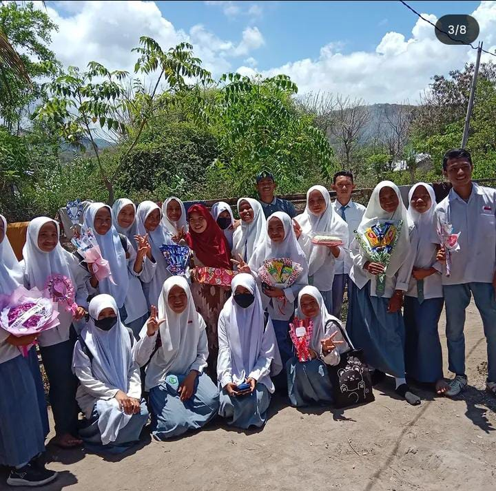
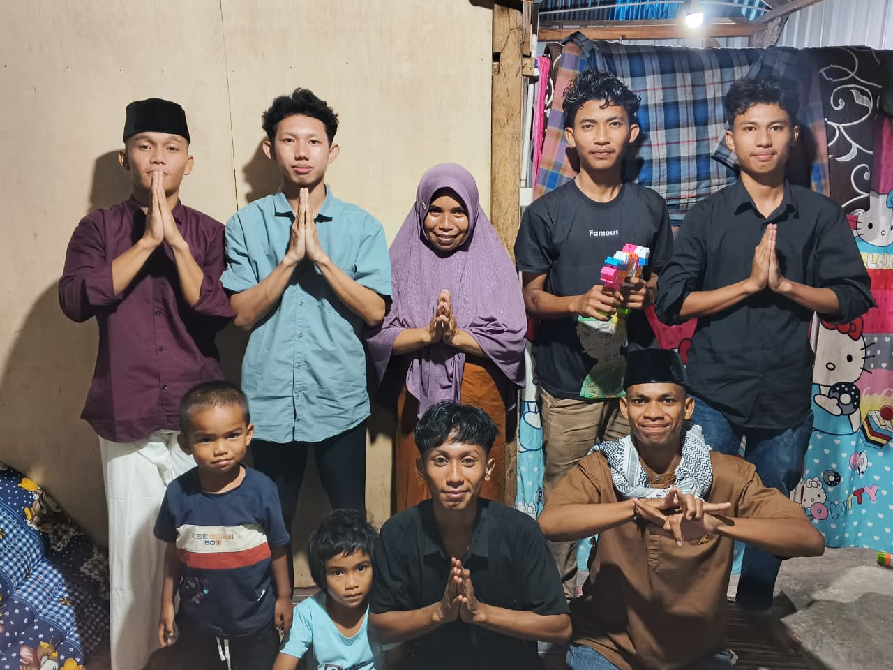
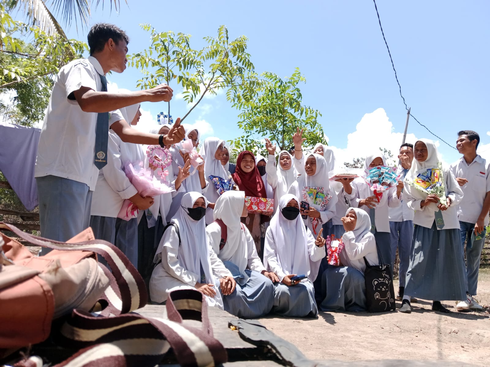

Kebersamaan Hari Guru
Kebersamaan yang ada di saat membawakan hadiah hari guru.
Terima kasih atas setiap pelita ilmu, kesabaran tanpa batas, dan ketulusan hati dalam membimbing kami meraih masa depan yang gemilang. Engkaulah pahlawan tanpa tanda jasa yang sesungguhnya.

Sebuah refleksi tulus atas dedikasi dan kasih sayang yang telah diberikan di ruang kelas maupun dalam kehidupan.
Guru bukan sekadar pengajar yang menuliskan rumus di papan tulis, melainkan penuntun arah saat kami tersesat dalam ketidaktahuan. Terima kasih telah mendengarkan keluh kesah kami, memaafkan kenakalan kami, dan selalu percaya bahwa setiap murid memiliki potensi luar biasa untuk bersinar.
Momen-momen berharga penuh tawa, bimbingan, dan kebersamaan yang tak terlupakan.

Kebersamaan yang ada di saat membawakan hadiah hari guru.

Bersilaturahmi ke rumah guru saat hari raya Idul Fitri.

Bercanda dan tawa saat melakukan sesi potret.
Untaian kalimat penuh makna untuk menyemangati langkah mulia para pendidik bangsa.
"Guru yang baik ibarat lilin; ia menghabiskan dirinya sendiri demi menerangi jalan bagi orang lain menuju masa depan yang cerah."
#PelitaIlmu"Setiap nasihat yang Bapak dan Ibu tanamkan hari ini akan tumbuh menjadi pohon kebaikan yang buahnya dipetik oleh peradaban di masa depan."
#InspirasiBangsa"Pendidikan bukan hanya tentang mengisi wadah yang kosong, tetapi menyalakan api rasa ingin tahu yang tak pernah padam sepanjang hayat."
#PendidikHebat"Di balik setiap orang hebat, dokter, insinyur, maupun pemimpin bangsa, selalu ada peran seorang guru yang sabar membimbing dari awal."
#PahlawanTanpaTandaJasaTambahkan pesan pribadi untuk guru favoritmu dan tampilkan langsung di dinding apresiasi ini.